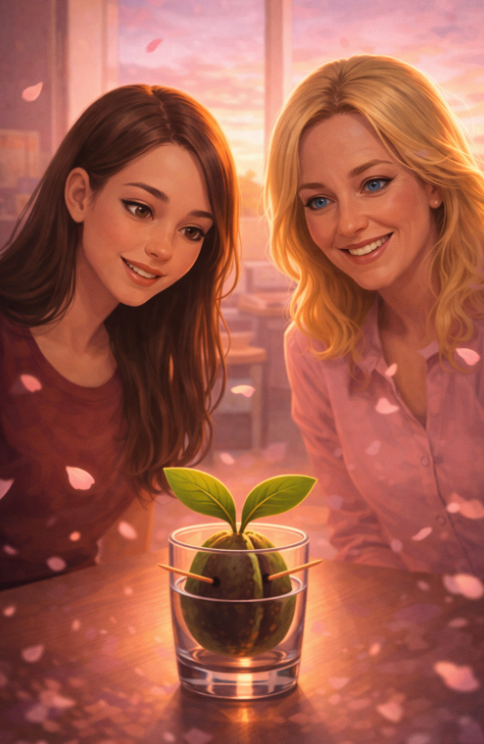

Stamattina è successa una cosa insolita.
Non insolita come qualcuno-ha-rovesciato-l'olio-in-magazzino...insolita. Insolita nel senso buono. Nel senso che l'aria dell'ufficio aveva una qualità diversa già prima che aprissero la porta, come quando cambia il vento e anche le foglie lo sentono prima di vederlo arrivare.
Le mie foglioline lo hanno captato immediatamente. Si sono drizzate. Orientate. Ho impiegato qualche secondo a capire perché.
Poi le ho viste.
Erano due. Arrivavano insieme, il che già diceva qualcosa su di loro: le persone che arrivano insieme agli posti nuovi o si conoscono da sempre o hanno già deciso di fidarsi l'una dell'altra prima ancora di avere prove sufficienti. In entrambi i casi, sono persone interessanti.
La prima si chiamava Michela.
Lo si capiva dal modo in cui entrava in uno spazio: non lo occupava, lo abitava. C'è una differenza enorme e pochissime persone la conoscono. Occupare uno spazio significa riempirlo. Abitarlo significa renderlo tuo senza toglierlo agli altri.
Michela aveva capelli scuri e un'espressione che oscillava continuamente tra l'ironia e la tenerezza, come una bilancia che non riesce a scegliere da che parte pendere e alla fine decide che va bene così.
Portava una borsa troppo piena — il tipo di borsa che contiene almeno tre cose inutili e una cosa indispensabile che nessun altro avrebbe pensato di portare.
La seconda si chiamava Sandra.
Sandra era diversa. Non complementare — diversa. Dove Michela abitava lo spazio, Sandra lo osservava prima di entrarci.
Si era fermata sulla soglia un secondo, appena un secondo, il tempo di fare quella cosa che fanno le persone attente: leggere la stanza prima di diventarne parte.
Aveva gli occhi di chi ascolta anche quando non sta ascoltando, e il modo di muoversi di chi sa esattamente quanto spazio occupa e sceglie consapevolmente di occuparne meno.
Non per timidezza. Per tattica. O forse per gentilezza.
Simone le ha accolte. Le presentazioni sono state rapide, calde, con quella qualità delle accoglienze sincere che non hanno bisogno di cerimonie.
Giulia — la mia Guacollega — le ha guardate entrambe con quell'occhio che ha lei, quell'occhio che non giudica ma cataloga, e ha annuito piano.
Poi Michela ha visto me.
Si è avvicinata al mio bicchiere con una lentezza rispettosa.
— Questo è Guacamino? —
— Questo è Guacamino — ha confermato Simone.
Michela ha annuito lentamente.
— Ha due foglie.
Tre, quasi — ho pensato con orgoglio vegetale.
— È bellissimo — ha detto Sandra.
Ho mosso entrambe le foglioline contemporaneamente.
Linguaggio vegetale per: benvenute.
Nel corso della mattinata ho imparato altre cose su di loro.
Michela e Sandra venivano dall'ufficio di Elisa.
Questo era il dettaglio che cambiava tutto.
Conoscevano Elisa davvero. Sapevano come pensava. Sapevano cosa la muoveva. Sapevano probabilmente anche cosa la bloccava.
E questo, in questo momento preciso della storia, valeva più di qualsiasi fogliolina.
Michela aveva una memoria prodigiosa per i dettagli che agli altri sembrano irrilevanti.
Il tipo di memoria che nota quando un'etichetta è stata spostata, quando un documento arriva con un giorno di ritardo, quando qualcuno risponde senza rispondere davvero.
Sandra invece aveva un talento diverso.
Sapeva parlare con le persone difficili senza farle sentire attaccate.
Con Elisa parlava ancora.
Non per lealtà cieca.
Perché aveva capito una cosa che pochi capiscono: le persone non cambiano sponda perché vengono convinte.
Cambiano sponda perché qualcuno rimane vicino abbastanza a lungo da essere lì quando decidono di farlo.
Nel pomeriggio Michela si è seduta vicino al mio bicchiere con una tazza di tè.
Ha guardato fuori dalla finestra.
Poi ha parlato piano.
— Elisa non è cattiva —
— È convinta. E le persone convinte sono molto più pericolose di quelle cattive.
Ho mosso una fogliolina.
— Lo sai anche tu, vero?
Ho mosso l'altra fogliolina.
Linguaggio vegetale per: sì.
Alla fine della giornata ho fatto un bilancio.
I cattivi avevano un piano.
Tre fasi: Destabilizzazione. Isolamento e trappola.
I buoni avevano perso un po' di terreno senza ancora saperlo.Ma oggi erano arrivate Michela e Sandra. E le partite non si vincono solo con i piani. Si vincono con le persone giuste nel posto giusto al momento giusto.
Le mie foglioline si sono inclinate verso di loro. Piano, quasi impercettibilmente.
Un saluto.
Un riconoscimento.
Una promessa vegetale.
Benvenute in questa storia.
Ne avevamo bisogno.
— Guacamino 🥑
← Vai al Giorno 31 Vai al Giorno 33 →